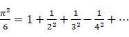
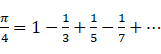
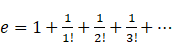

Previously, we used the loop statements to complete the sum and max/min operations for the sequence members, but the loop statements are very troublesome, and we need to set the initial value first and then calculate step by step. SPL takes this into account and provides some common functions for sequences.
|
|
A |
B |
|
1 |
=[3,2,1,8].sum() |
|
|
2 |
=[3,4,1,0,5].max() |
=[4,5,2,3,2].min() |
|
3 |
=[3,null,4,5].len() |
=[3,null,4,5].count() |
|
4 |
=[3,null,4,5].avg() |
|
It's easy to see the meaning from the names of these functions, and then execute this code to observe the operation results to confirm. count() is a bit like len(), but count() does not count members whose values are null. avg() is defined as sum()/count(), not sum()/len().
We will popularly call the functions that calculate the sequence into a single value aggregate functions, which are equivalent to aggregate the set.
These aggregate functions all use the object syntax of x.f(). In fact, SPL also supports writing these functions in traditional form, while sequence members are used as parameters：
|
|
A |
B |
|
1 |
=sum(3,2,1,8) |
|
|
2 |
=max(3,4,1,0,5) |
=min(4,5,2,3,2) |
|
3 |
=count(3,null,4,5) |
|
|
4 |
=avg(3,null,4,5) |
|
We've used the max/min function before.
It should be pointed out that len() is not regarded as an aggregate function. It actually gets an attribute of the sequence and does not actually traverse the sequence members to calculate the result. Therefore, len() does not have this way to write the sequence members as parameters.
We know that using to(n) can generate sequence [1,2,..., n], and then use sum() function to get the sum, so we can easily calculate 1+2+...+100 with to(100).sum(), which is much simpler than the previous code of loop statements.
So, what about the sum of the first 100 odd numbers? Seems to have to write loop statements?
No, SPL has thought about this and provides a way to generate a new sequence of the same length from an existing sequence. This expression to(100).(~*2-1).sum() can calculate the sum of the first 100 odd numbers.
We can understand the left to(100) and the right .sum(), but what is the .(~*2-1) in the middle?
For the sequence A, A.(x) denotes a sequence of the same length formed by calculating the expression x for each member of A in the same order. In expression x, the symbol ~ is used to represent the member of A which is participating in the calculation.
[1,2,3].(~*2-1) is [1*2-1,2*2-1,3*2-1], that is [1,3,5]. Just replace ~ with each sequence member in turn, and ~ is actually the loop variable when the sequence loops.
In this way we can understand to(100).(~*2-1).sum(). Similarly, to(11,20).(~*~).sum() can calculate the sum of squares of 10 numbers from 11 to 20.
A.(x).sum() is a common writing method. In SPL, it can be simplified to A.sum(x), which is simple and easy to understand. Furthermore, the functions on to(n) are also commonly used, and SPL allows them to be simplified as n.f(…).
1+2+...+100 can be written as 100.sum(), and the first 100 odd sum can also be written as 100.sum(~*2-1). Isn’t it very simple?
The functions that calculate on each member of the sequence and get a new result after traversing all the members are generally called loop functions. A.(x), aggregate functions and simplified form of A.f(…) are all loop functions.
Euler found a formula related to π:  We use it to calculate π in reverse， just one expression:
=sqrt(1000.sum(1/~/~)*6)
The accuracy of the first 1000 items is enough.
There are many formulas related to π, here is another one:  With the help of if function, it is easy to implement:
=1000.sum(if(~%2==1,1,-1)/(2*~-1))*4
The syntax of loop function is very concise and efficient.
Let's simplify the example used in learning loop, and calculate 
When we used loop statements before, we used an intermediate variable to calculate n!, But it seems that it can't be written in ~?
Actually you can also use an intermediate variable in an expression. The code without loop statements is rewritten as follows：
|
|
A |
|
1 |
>nf=1 |
|
2 |
=1+20.sum( (nf*=~,1/nf) ) |
The expression in sum uses the comma operator, that is, (a,b,c,…,x) will calculate a,b,c,…,x in turn, and the final result is x. (nf*=~,1/nf) will calculate nf*=~ (recall that = can be used as an operator), then calculate 1/nf, and the final result is 1/nf. Comma operator is also invented by C language and inherited by SPL. It can be used to write a small number of multi-step operations in an expression to avoid writing multiple statements. The expression of the comma operator usually needs to be written in parentheses to ensure that it will not be misidentified. For example, if the outer parentheses are not written here, it may be considered by the sum() function to be multiple parameters to perform sum, which leads to the wrong result.
Now that we’ve learned the usage of the comma operator, we can also use it to combine two pieces of code into one：
|
|
A |
|
1 |
=(nf=1,1+20.sum( (nf*=~,1/nf) ) ) |
For Fibonacci sequence, we can calculate the first n terms of the sequence since we have the weapon of sequence：
|
|
A |
|
1 |
>a=0,b=1 |
|
2 |
=20.( (b=a+b,a=b-a) ) |
A2 will calculate the first 20 terms of Fibonacci sequence. The expression here does not use ~, which acts as a loop variable. The loop function is only used to realize repeated calculation.
This code seems a little difficult to understand. Its principle is the same as the example code when we talked about loop statements before. We will not elaborate on it any more.
Please think for yourself, draw the process on the paper and execute it by yourself.